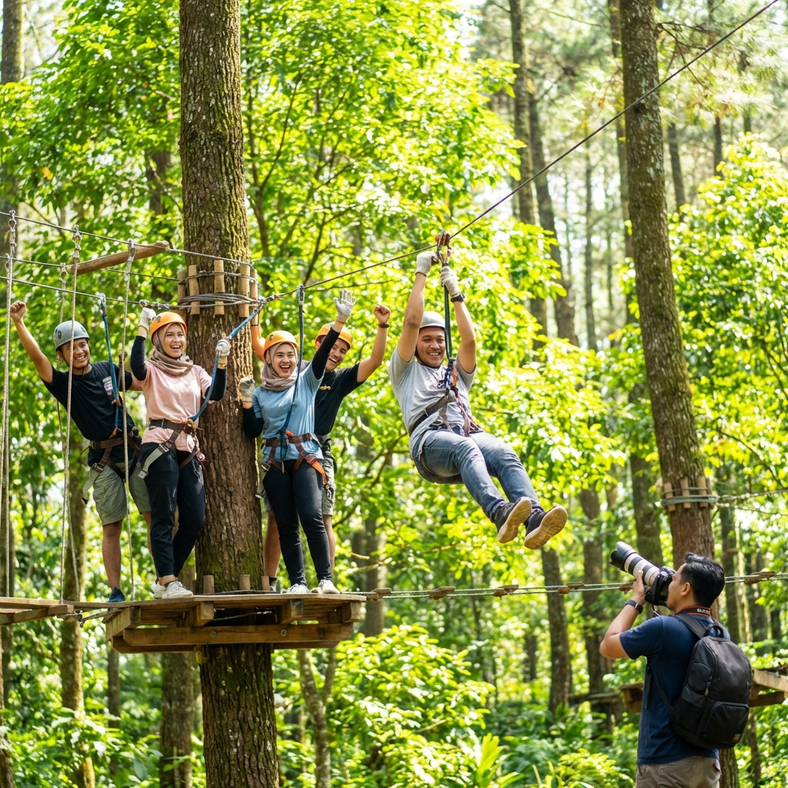

Rafting atau arung jeram adalah salah satu kegiatan pilihan utama saat berkunjung ke Kota Batu. Mengikuti arus sungai yang deras sambil melewati rintangan batu-batu besar memberikan kepuasan tersendiri bagi pecinta tantangan. Namun, bagi pemula, ada beberapa hal yang harus diperhatikan agar tetap aman.
"Keberanian bukan berarti ketiadaan rasa takut, melainkan kemampuan untuk bertindak meskipun ada rasa takut."
Persiapan Fisik dan Mental
Meskipun Anda akan dibantu oleh pemandu (skipper) yang berpengalaman, rafting tetap membutuhkan tenaga ekstra, terutama saat mendayung melawan arus atau ketika perahu tersangkut di bebatuan. Pastikan kondisi jantung dan pernapasan dalam keadaan baik.
Perlengkapan Keamanan Wajib
Keselamatan adalah segalanya. Sesuai standar internasional, setiap peserta rafting wajib menggunakan perlengkapan pelindung diri (PPE).
1. Life Jacket (Pelampung)
Pastikan pelampung terpasang dengan kencang namun tidak menghambat pernapasan. Pelampung ini didesain untuk menyanggah kepala Anda tetap di atas permukaan air jika terjatuh.
2. Helem (Helmet)
Melindungi kepala dari benturan bebatuan sungai yang keras atau benturan dengan dayung teman satu tim.

Teknik Dasar Mendayung
Instruktur kami di Outbound Batu akan memberikan briefing teknis sebelum memulai. Ada beberapa aba-aba penting: "Dayung Maju", "Dayung Mundur", "Boom" (untuk merunduk), dan "Pindah Kanan/Kiri" untuk menyeimbangkan perahu.

Pemberian instruksi keselamatan oleh skipper profesional sebelum turun ke sungai.
Apa yang Harus Dilakukan Jika Jatuh ke Air?
Jangan panik! Posisi paling aman adalah "Floating" atau terlentang dengan kaki menghadap ke depan. Jangan pernah mencoba berdiri di dasar sungai yang berarus deras karena kaki bisa terjepit di sela batu.
Kesimpulan
Rafting di Batu adalah pengalaman wajib bagi Anda yang mencari keseruan. Dengan mengikuti panduan keselamatan dan instruksi pemandu, risiko dapat diminimalisir dan kegembiraan akan menjadi maksimal.
FAQ
Boleh. Pelampung kami memiliki daya apung tinggi yang mampu menjaga Anda tetap mengapung meskipun tidak bisa berenang.